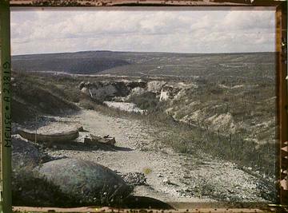

Hoe werd er bij Verdun gevochten? Getallen met ≈ zijn schattingen; cijfers tussen haken verwijzen naar de bronnen.
💥 Artillerie
De slag van het geschut
Verdun was vooral een slag van de artillerie: verreweg de meeste doden en gewonden vielen door granaten. Op 21 februari 1916 stonden er aan Duitse kant ≈ 1.200 stukken geschut klaar, waaronder zware mortieren van 305 en 420 mm. Volgens vaak genoemde schattingen vielen er op de eerste dag ≈ 1 miljoen granaten. ⚖️ Omstreden Hoe groot dat aantal echt was, verschilt per bron. [1]
De Franse veldkanon van 75 mm (‘le 75’) kon heel snel vuren, maar had weinig vernietigingskracht tegen bunkers. Voor de herovering van Douaumont in oktober 1916 zette het Franse leger twee spoorweghouwitsers van 400 mm in. Hun granaten sloegen door het beton van het fort. [10][11][3]
Het hele slagveld werd zo vaak omgeploegd dat dorpen, bossen en wegen verdwenen. Nog steeds worden er elk jaar tonnen blindgangers gevonden. [12] ▶ In de simulatie
🏰 Forten
Een ring van forten
Na de nederlaag van 1870 bouwde Frankrijk onder generaal Séré de Rivières een ring van forten rond Verdun. Na 1885 kwamen er beton en draaibare stalen geschutskoepels bij. Douaumont was het grootste en hoogste fort. [2]
In 1915 haalde het leger veel geschut uit de forten, omdat de Belgische forten in 1914 snel waren gevallen. Daardoor kon Douaumont op 25 februari 1916 bijna zonder gevecht worden ingenomen. Later bleken de forten juist goede schuilplaatsen: ze doorstonden zware beschietingen. [3][1] 🗺 Op de kaart

☠️ Gas
Groenkruis (difosgeen)
In de nacht van 22 op 23 juni 1916 beschoot het Duitse leger de Franse artillerie met ≈ 100.000 gasgranaten met een groen kruis: difosgeen, een longgas. Het aantal is een schatting. Het gas trok in de dalen en schakelde veel Franse batterijen uit. Toch hielden de Franse linies bij Froideterre en Souville stand. [4][1] ▶ In de simulatie
De Fransen gebruikten sinds begin 1916 zelf fosgeengranaten. Met betere gasmaskers werd het gas minder dodelijk, maar het bleef de soldaten uitputten. [1]
🔥 Vlammenwerpers en stoottroepen
Nieuwe manieren van aanvallen
Al op 26 februari 1915 gebruikte het Duitse leger bij Malancourt, ten noordwesten van Verdun, vlammenwerpers tegen Franse loopgraven. Vanaf 1916 hoorden ze bij de aanvallen van de stoottroepen. [5]
Stoottroepen (Sturmtruppen) vielen in kleine groepen aan met handgranaten, lichte mitrailleurs en vlammenwerpers. Ze zochten zwakke plekken in plaats van in rijen vooruit te lopen. Het Sturmbataillon Rohr oefende die werkwijze en gebruikte haar ook bij Verdun. [8]
⛏️ Mijnen
Onder de grond: Vauquois en Les Éparges
Op de Butte de Vauquois groeven Fransen en Duitsers van 1915 tot 1918 tunnels onder elkaars stellingen. Er waren ≈ 519 ontploffingen. De grootste Duitse mijn, op 14 mei 1916, bevatte ≈ 60 ton explosieven en doodde 108 Franse soldaten. Van het dorp bleef een rij kraters over. [6] 🗺 Op de kaart
Ook op de kam van Les Éparges werden in 1915 mijnen gebruikt. De kraters zijn er nog. ▶ In de simulatie 🗺 Op de kaart
🚚 Voie Sacrée en noria
De slagader van Verdun
Met de Duitse beschietingen was het spoor naar Verdun bijna onbruikbaar. Alleen de smalle weg van Bar-le-Duc (≈ 75 km) bleef over. Daarover reden dag en nacht vrachtwagens, op het drukst ≈ elke 14 seconden één. Per week gingen er ≈ 90.000 man en ≈ 50.000 ton materieel naar het front. Territoriale soldaten gooiden de hele tijd steen onder de wielen om de weg heel te houden. De schrijver Maurice Barrès noemde haar de ‘Voie Sacrée’, de heilige weg. [7] 🗺 Op de kaart
Pétain liet de divisies na korte tijd aflossen: de ‘noria’, naar het schepwiel. Daardoor vocht een groot deel van het Franse leger (≈ 70 divisies) een tijd bij Verdun. [1]
✈️ Vliegtuigen
Strijd om het luchtruim
Bij Verdun ging het voor het eerst echt om wie het luchtruim beheerste. In het begin domineerden de Duitse Fokker-eendekkers. Frankrijk bracht daarop zijn jachtvliegers samen in grote eskaders met Nieuport-toestellen. In mei 1916 kwam ook de Escadrille Lafayette, met Amerikaanse vrijwilligers, naar Verdun. Vliegtuigen en ballonnen waren vooral belangrijk om het artillerievuur te sturen. [1] [9]
Bronnen
- Wikipedia (en), Battle of Verdun – en.wikipedia.org/wiki/Battle_of_Verdun
- Wikipedia (fr), Système Séré de Rivières – fr.wikipedia.org/wiki/Syst%C3%A8me_S%C3%A9r%C3%A9_de_Rivi%C3%A8res
- Wikipedia (fr), Fort de Douaumont – fr.wikipedia.org/wiki/Fort_de_Douaumont
- Wikipedia (en), Diphosgene – en.wikipedia.org/wiki/Diphosgene
- Wikipedia (en), Flamethrower – en.wikipedia.org/wiki/Flamethrower
- Wikipedia (fr), Butte de Vauquois – fr.wikipedia.org/wiki/Butte_de_Vauquois
- Wikipedia (fr), Voie sacrée – fr.wikipedia.org/wiki/Voie_sacr%C3%A9e
- Wikipedia (en), Stormtrooper – en.wikipedia.org/wiki/Stormtrooper
- Wikipedia (en), Lafayette Escadrille – en.wikipedia.org/wiki/Lafayette_Escadrille
- Wikipedia (en), Obusier de 400 Modèle 1915/1916 – en.wikipedia.org/wiki/Obusier_de_400_Mod%C3%A8le_1915/1916
- Wikipedia (en), Canon de 75 modèle 1897 – en.wikipedia.org/wiki/Canon_de_75_mod%C3%A8le_1897
- Wikipedia (en), Zone rouge – en.wikipedia.org/wiki/Zone_rouge